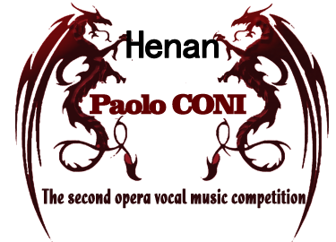
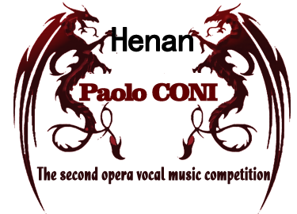

-
Preliminary
May 23 ~ 25, 2016Preliminary players customize a singing in the repertoire
-
Playoff
On May 26 ~ 27, 2016Semi-finals players by the judges in the 4 choose a singing songs, if players compete for the "verdi works best to sing" the judges, selected a verdi
-
Finals
On May 28, 2016Finalist need to sing two songs, all judges by choice
-
The final concert
On May 29, 2016The judges have the right to according to the extent of the player shall terminate or requests the contestant to add sing songs to the end of the game results that day
 
